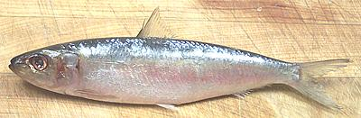

Blue Herring

[Skipjack Shad; Alosa chrysochloris]
While most herring are found in cold ocean waters this one likes
subtropical temperatures and ventures far up rivers, having been found
as far north as Minnesota in the Mississippi and Ohio rivers. This
fish can grow to 19 inches and 3-3/4 pounds, but the photo specimen,
caught wild off Florida, was 9-1/2 inches and weighed 5 ounces.
More on the Herring Family
After filleting this fish and removing the ribs you'll find the
fillets are still "prickly" with tiny spines. That's why herring is often
pickled, which softens all those spines into edibility. Since it's a
fairly strong flavored oily fish, it works well for pickles and
marinades.
Fish in the 4 to 6 ounce range have too many tiny bones to deal with
as a whole fish so they are usually filleted. A 5 ounce fish will yield
about 2.3 oz of Fillet (46%). This fish is too strong and oily to use
the head and bones for stock so discard them.
You have to fillet the fish quickly to make it worth the bother and
this procedure works reasonably well.
- Scale the fish. It has a lot of large scales but they scrape off
easily with a minimum of flying about.
- Clean the fish. You'll immediately notice you can't get your knife
into the belly due to a hard keel and hard "scutes" covering it. Take
your kitchen shears and cut off the entire keel from vent to jaw. Now
clean the usual way but don't bother with the gills, the head will be
discarded.
- Cut across the tail on both sides and make a cut on each side of the
anal fin from the tail into the body cavity.
- Make a cut around the collar as usual and fillet this fish the
"classic" way. Start at the head end with the knife crosswise to the fish
and just run it down to the tail. Any other method will take too much
time for such small fillets. Use your long nose pliers to remove ribs
from the fillet.
- Once the ribs are removed you'll notice the fillet is still prickly
with tiny spines. These just have to be pickled or cooked into softness
- there's too many and they're too small to pick out. Deep frying will
toast them to edibility.
sf_herrbz 060804 - www.clovegarden.com
©Andrew Grygus - agryg@clovegarden.com - Photos on this
page not otherwise credited are © cg1 -
Linking to and non-commercial use of this page permitted